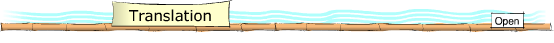

This section provides you with the key language needed to make contact.
The key
language is relevant to the whole unit.
 你好nǐhǎo 你好nǐhǎo | Hello.(informal) |
| 王老师,您好Wáng lǎoshī, nín hǎo | Hello, Teacher Wang. (formal) |
| 早上好zǎoshàng hǎo | Good morning. |
| 晚上好wǎnshàng hǎo | Good evening. |
| 好久不见hǎo jiǔ bù jiàn | Long time no see! |
| 再见zàijiàn | Goodbye. |
| 明天见míngtiān jiàn | See you tomorrow! |
| 下次再聊xiàcì zài liáo | Talk with you next time! |
| 你叫什么名字?nǐ jiào shénme míngzì | What is your name? (informal) |
| 你姓什么?nǐ xìng shénme? | What is your surname? |
| 我姓毛,叫毛小龙。wǒ xìng Máo, jiào Máo Xiǎolóng | My surname is Mao, I am Xiaolong Mao. |
| 您贵姓?nín guì xìng | What is your surname? (formal) |
| 免贵姓郁miǎn guì xìng Yù | My surname is Yu. |
| 欢迎huānyíng | Welcome. |
| 很高兴见到你hěn gāoxìng jiàndào nǐ | Nice to meet you. |
| 喂wèi | Hello (on the telephone) |
| 我来介绍一下wǒ lái jièshào yīxià | Let me introduce ... |

Key vocabulary for a first meeting.
| 早上好 | Good morning |
| 好像 | seem |
| 见 | to meet |
| 过 | aspect particle: past event |
| 嘛 | attitude particle: agreement |
| 这里 | here |
| 新 | new |
| 学生 | student |
| 叫 | to be called |
| 名字 | name |
| 杨帆 | Fan Yang (name) |
| 从 | from |
| 哪儿 | where |
| 来 | to come |
| 来自 | to come from |
| 的 | attribute marker |
| 家 | home |
| 在 | in |
| 杭州 | Hangzhou (city) |
| 会 | can |
| 说 | speak |
| 杭州话 | Hangzhou dialect |
| 对 | yes, correct |
| 还 | also |
| 几 | several |
| 语言 | language |
| 除了 | except, apart from |
| 英语 | English (language) |
| 和 | and |
| 瑞典语 | Swedish (language) |
| 怎么 | how |
| 因为 | because |
| 待 | to stay at |
| 瑞典 | Sweden |
| 年 | year |
| 半 | half |
| 完成 | to complete |
| 硕士 | Master (degree) |
| 课程 | course |
| 有意思 | interesting |
| 美国 | America |
| 地方 | area |
| 芝加哥 | Chicago |
| 得 | particle: complement marker |
| 棒 | excellent |
| 哪里 | not really! (lit. where?) |
| 中文 | Chinese (language) |
| 洛杉矶 | Los Angeles |
| 还有 | also |
| 南京 | Nanjing (city) |
| 北京 | Beijing (city) |
| 久 | long (time) |
| 几 | how many |
| 快 | almost |
| 六 | six |
| 对不起 | excuse me |
| 要 | have to |
| 去 | go |
| 图书馆 | library |
| 没事 | that's ok, no problem |
| 下次 | next time |
| 聊 | to talk, to chat |

| Amanda: | 早上好。 |
| 杨帆: | 早上好。 |
| Amanda: | 我好像见过你。 |
| 杨帆: | 是嘛, 我是这里的新学生。 |
| Amanda: | 是嘛.你叫什么名字? |
| 杨帆: | 我叫杨帆, 你呢? |
| Amanda: | 我叫Amanda。 |
| 杨帆: | 很高兴认识你。 |
| Amanda: | 很高兴认识你。你是从哪儿来的? |
| 杨帆: | 我来自中国。我的家乡叫杭州。 |
| Amanda: | 杭州, 你会说杭州话吗? |
| 杨帆: | 对的,我会。 |
| Amanda: | 你还会说几个语言? |
| 杨帆: | 除了杭州话,我还会说英语和瑞典语。 |
| Amanda: | 是嘛。你怎么会说瑞典语? |
| 杨帆: | 因为我在瑞典待了一年半,在那儿完成了我的硕士课程。 |
| Amanda: | 啊, 有意思. |
| 杨帆: | 你呢?你是从哪里来的? |
| Amanda: | 我是从美国来的。 |
| 杨帆: | 美国的哪个地方呢? |
| Amanda: | 芝加哥。 |
| 杨帆: | 你中文说得很棒. |
| Amanda: | 哪里,哪里. |
| 杨帆: | 你是在哪里学的中文呢? |
| Amanda: | 在洛杉机、南京还有北京. |
| 杨帆: | 你学中文学了很久了吧? |
| Amanda: | 是的。 |
| 杨帆: | 几年了? |
| Amanda: | 快六年了. |
| 杨帆: | 哦，那很久了。 |
| Amanda: | 对,很久了。 |
| Amanda: | 对不起我要去图书馆。 |
| 杨帆: | 没事. |
| Amanda: | 那我们下次再聊。 |
| 杨帆: | 下次。 |
| Amanda & 杨帆: | Bye. |
| Amanda: | Zǎoshàng hǎo. |
| Yáng Fān: | Zǎoshàng hǎo. |
| Amanda: | wǒ hǎoxiàng jiàn guò nǐ. |
| Yáng Fān: | Shì ma. Wǒ shì zhèlǐ de xīn xuéshēng. |
| Amanda: | Shì ma. Nǐ jiào shénme míngzì? |
| Yáng Fān: | Wǒ jiào Yáng Fān, nǐ ne? |
| Amanda: | Wǒ jiào Amanda. |
| Yáng Fān: | Hěn gāoxìng rènshi nǐ. |
| Amanda: | Hěn gāoxìng rènshi nǐ. Nǐ shì cóng nǎr lái de? |
| Yáng Fān: | Wǒ láizì Zhōngguó. Wǒ de jiāxiāng jiào Hángzhōu. |
| Amanda: | Hángzhōu, nǐ huì shuō Hángzhōu huà ma? |
| Yáng Fān: | Duì de, wǒ huì. |
| Amanda: | Nǐ hái huì shuō jǐ gè yǔyán? |
| Yáng Fān: | Chúle Hángzhōu huà wǒ hái huì shuō Yīngyǔ hé Ruìdiǎn yǔ. |
| Amanda: | Shì ma. Nǐ zěnme huì shuō Ruìdiǎn yǔ? |
| Yáng Fān: | Yīnwèi wǒ zài Ruìdiǎn dāi le yī nián bàn. Zài nàr wánchéng le wǒ de shuòshì kèchéng. |
| Amanda: | Ā, yǒu yìsi. |
| Yáng Fān: | Nǐ ne? Nǐ shì cóng nǎli lái de? |
| Amanda: | Wǒ shì cóng Měiguó lái de. |
| Yáng Fān: | Měiguó de nǎ ge dìfang ne? |
| Amanda: | Zhījiāgē. |
| Yáng Fān: | Nǐ Zhōngwén shuō de hěn bàng. |
| Amanda: | Nǎlǐ, nǎlǐ. |
| Yáng Fān: | Nǐ shì zài nǎlǐ xué de Zhōngwén ne? |
| Amanda: | Zài Luòshānjī, Nánjīng háiyǒu Běijīng. |
| Yáng Fān: | Nǐ xué Zhōngwén xué le hěn jiǔ le ba. |
| Amanda: | Shìde. |
| Yáng Fān: | Jǐ nián le? |
| Amanda: | Kuài liù nián le. |
| Yáng Fān: | Ò, nà hěn jiǔ le. |
| Amanda: | Duì, hěn jiǔ le. |
| Amanda: | Duìbuqǐ wǒ yào qù túshūguǎn. |
| Yáng Fān: | Méishì. |
| Amanda: | Nà wǒmen xià cì zài liáo. |
| Yáng Fān | Xià cì. |
| Amanda & Yáng Fān: | Bye. |

| Amanda: | Good morning. |
| Yang Fan: | Good morning. |
| Amanda: | I seem to have met you before. |
| Yang Fan: | Really? I am a new student here. |
| Amanda: | Ok. What is your name? |
| Yang Fan: | I am called Fan Yang. And you? |
| Amanda: | My name is Amanda. |
| Yang Fan: | Nice to meet you. |
| Amanda: | Nice to meet you. Where are you from? |
| Yang Fan: | I am from China. My home is in Hangzhou. |
| Amanda: | Hangzhou. Do you speak the Hangzhou dialect? |
| Yang Fan: | Yes, I do. |
| Amanda: | How many other languages do you speak? |
| Yang Fan: | Apart from the Hangzhou dialect, I speak English and Swedish. |
| Amanda: | Ah. How come you speak Swedish? |
| Yang Fan: | Because I lived in Sweden for a year and a half. I completed my Master's course there. |
| Amanda: | Ah, interesting. |
| Yang Fan: | Where are you from? |
| Amanda: | I am from the United States. |
| Yang Fan: | What region are you from? |
| Amanda: | Chicago. |
| Yang Fan: | Your Chinese is excellent. |
| Amanda: | Not really. |
| Yang Fan: | Where did you learn Chinese? |
| Amanda: | In Los Angeles, Nanjing and also in Beijing. |
| Yang Fan: | You must have been learning Chinese for a long time. |
| Amanda: | Yes. |
| Yang Fan: | For how many years? |
| Amanda: | For almost six years. |
| Yang Fan: | That's a long time. |
| Amanda: | Yes, quite a long time. |
| Amanda: | Excuse me, I have to go to the library. |
| Yang Fan: | No problem. |
| Amanda: | Will talk again later. |
| Yang Fan: | See you later. |
| Amanda: | Bye. |